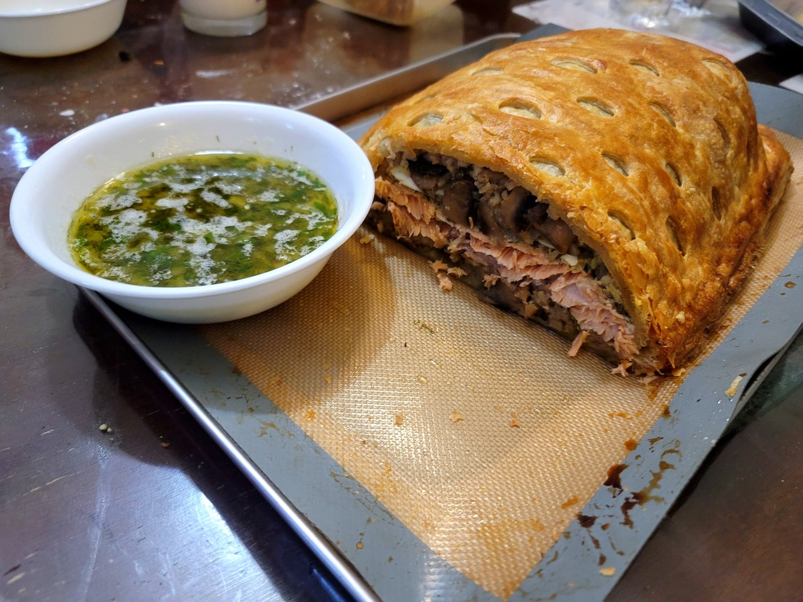

Coulibiac

Ingredients:
Mushroom Rice:
- 1 lb White mushrooms, sliced
- 1 Onion, diced
- 2 tbsp Butter
- 4 cloves Garlic, minced
- 1 tsp Salt
- 1/2 tsp Cumin
- 1/2 tsp Coriander
- 1/4 tsp Black pepper
- 1 cup Rice, uncooked
- 1 3/4 cup Chicken broth
Salmon Spread:
- 1/2 cup Butter, room temperature
- Zest of 2 Lemons
- 2 tbsp Dill, chopped
- 1 tsp Salt
- 1/2 tsp Paprika
Lemon Sauce:
- 1 large Shallot, diced
- 1/2 cup Butter
- 1/4 cup Lemon juice
- 1/2 cup White wine
- 1/2 tsp Salt
- 1 tbsp Dill, chopped
- 1 tbsp Parsley, chopped
Coulibiac:
- 2 lb Salmon fillet, roughly 14 inches long, skin removed and deboned
- 3 sheets Frozen puff pastry, thawed
- 4 Eggs, hard boiled and sliced
- 1 Egg + 1 tbsp Water, whisked for egg wash
Instructions:
- First prepare the mushroom rice. Melt the butter in a pot over medium heat. Add in the mushrooms and onion and sauté until the mushrooms are browned and the onions are translucent, about 7-8 minutes. Then add the garlic and sauté for another minute.
- Add the rest of the mushroom rice ingredients and stir to combine. Cover and bring to a boil over high heat. Reduce to low and let cook until the liquid has completely evaporated and the rice is cooked, about 15 minutes. Then fluff with a fork and let cool.
- Prepare the salmon spread by combining the salmon spread ingredients and mixing to combine.
- Trim the salmon to be about 6 inches wide. Do not toss the trimmed salmon and include them in the coulibiac as well. Pat the salmon dry and rub evenly with the butter spread.
- Preheat an oven to 375 degrees Fahrenheit.
- Flatten a sheet of puff pastry to about 1-2 inches more in length and width than the salmon fillet. Place onto a parchment paper lined baking sheet.
- Add a layer of about 1 1/2 cup mushroom rice to the puff pastry. Place in the exact length and width of the salmon so that there is about a 1-2 inch border of puff pastry. Then lay the buttered salmon over the mushroom rice. Top the salmon with the sliced boiled eggs and then top with a final layer of mushroom rice.
- Roll another sheet of puff pastry to the length and width of the first puff pastry plus an addition of twice the height of the coulibiac added to both the length and height. Brush the border of the first puff pastry with egg wash. Then add the second puff pastry over the coulibiac and seal the edges of the coulibiac with a fork.
- Roll the last sheet of puff pastry to the width of the second puff pastry and to the length of the first puff pastry. Then cut 1 inch slits widthwise into the puff pastry in neat, overlapping rows. Brush the edges of the coulibiac with egg wash again and then add the final puff pastry. Seal the edges of the coulibiac with a fork and then trim any excess dough from the edge. There shoud be about a 1 inch border all around. Then brush over the whole thing with egg wash.
- Transfer the coulibiac to the oven. Let bake for 45-50 minutes or until the coulibiac is golden.
- While the coulibiac bakes, prepare the lemon sauce. Heat the butter in a pan over medium heat. Add the shallot and sauté until translucent, about 3-4 minutes. Then add the wine, lemon juice, and salt. Let simmer for about 5 minutes. Then remove from heat and stir in the dill and parsley.
- Once done baking, remove the coulibiac from the oven. Let cool for 15-20 minutes before slicing. Slice with a long serrated kife. Serve hot with the lemon sauce.